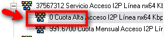
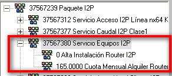

SERVICIO I2P
Un servicio I2P es una red privada virtual entre las diferentes sedes del cliente.
Tambien se conoce como IP-VPN
El cliente:
Puede compartir aplicaciones.
Tener una única salida de internet.
Disponer de los diferentes accesos (Xdsl, E1-4U, adsl 2+, ...) en función de la cobertura, ubicación...
ESTRUCTURA I2P
Todas las sedes estarán en la misma IP-VPN
ACCESO
CAUDAL
ROUTER
SERVICIO BACK UP
Acceso: tecnología de acceso desde la sede a la red I2P
Caudal: define el ancho de banda de la conexión, que puede ser menor que el nominal del acceso
Router: el router que se va a utilizar como interfaz entre la LAN y la línea de comunicaciones
Backup RDSI: velocidad que se configura para el respaldo por RDSI.
Siempre 100% de descuento en alta y mensualidad
Una
vez configurada, una sede tiene acceso a cualquier otro punto de la
IP-VPN.
No hay que definir conexiones específicas entre
sedes, una a una.
1-ACCESO
Estará condicionado por la ubicación, la cobertura que tenga el cliente en función del lugar donde solicite instalar el servicio.
El acceso tendrá la misma estructura en Vantive que los productos que hemos visto hasta ahora (masdsl, E1-4U...)
Es decir:
Cuota alta y cuota mensual.
Descuentos sobre el servicio, en el caso de que tenga una cuota fija. Es decir, no introducimos el precio de forma manual, como en el caso que indico como ejemplo, cuya cuota alta es de 0 euros.

2- CAUDAL
Es el ancho de banda contratado por el cliente.
El caudal tendrá la misma estructura en Vantive que los productos que hemos visto hasta ahora (masdsl, E1-4U...)
Es decir:
Cuotas (alta/mensual).
Descuentos sobre el servicio, en el caso de que tenga una cuota fija. Es decir, no introducimos el precio de forma manual, como en el caso que indico como ejemplo, cuya cuota alta es de 0 euros.
3 ROUTER
Es el equipo instalado al cliente

También
puede tener:
Cuotas (alta/mensual).
Descuentos sobre el servicio, en el caso de que tenga una cuota fija. Es decir, no introducimos el precio de forma manual, como en el caso que indico como ejemplo, cuya cuota alta es de 0 euros.
Dentro de la factura visualizaremos el servicio I2P en el apartado de JAZZDATA
En Vantive podemos visualizar el servicio y las sedes asociadas a cada servicio I2P en la pestaña IP-VPN
El identificador nos dice el “código de proyecto”
Habrá tantos códigos de proyectos como Paquetes I2p Contratados por el cliente
Dentro de la misma pestaña veremos los accesos que componen cada I2P.
Dentro de un mismo paquete de I2P puede haber diferentes accesos, en función de las sedes, y/o de las necesidades del cliente (p.e, acceso E1-4U, Primario, masdsl, línea alquilada a telefónica ...)
1. Si hacemos doble click sobre uno de los accesos,
p.ejemplo: BCN C/Industria 72
2. Veremos las características del acceso, pinchando sobre la pestaña SERVICIOS
3. En este caso, el cliente tiene un acceso I2P Ethernet a Datacenter, es decir, tiene equipos (servidores, por ejemplo) alojados en sedes de Jazztel.
Y un caudal contratado, ancho de banda.
No tiene equipo, porque esta en una sede de Jazztel.
Si pinchamos sobre el otro acceso, MAD_Arroyo Prado
5.
Veremos las características del otro acceso, dentro del mismo
I2P.
En la pestaña de servicios podemos ver que el cliente tiene un acceso alquilado, nos va a aparecer siempre como Línea nx64 kbps)
El caudal, ancho de banda, contratado por el cliente.
El equipo, en este caso SI hay equipo, puesto que no esta en una sede de Jazztel.
CARACTERÍSTICAS DE OTROS ACCESOS
ACCESO EXTRANET:
El proyecto contiene la palabra EXTRANET
Permite dar acceso al cliente a una extranet para las sedes.
Esta extranet puede tener un acceso permanente, es decir, no tiene limitación de usuarios, o puede estar limitada a una serie de usuarios, como en el ejemplo que se indica mas abajo.
ACCESO 900:
El proyecto contiene la palabra PUERTOS 900
El cliente puede conectarse a llamando a un número 900.
Dentro del servicio aparece un identificador de servicio que indica el numero al que llaman para conectarse
El servicio tiene los componentes:
Componente Básico Acceso I2P Puertos 900
Cuota Mensual XXX puertos 900 acceso I2P,
que nos indica la cantidad de usuarios que pueden
conectarse.
CCESO GPRS:
Son accesos a través de móviles
Los componentes que nos muestra son:
Alta conexión GRPS
Conexión Gprs
De XXX a XXX Terminales GPRS I2P, esto nos dicela cantidad de moviles que pueden conectarse al servicio
Cada
componente puede tener asociados descuentos, en la pestaña de
descuentos/promociones
FIREWALL
Protege al cliente de posibles ataques de virus, accesos no permitidos del exterior
Los componentes que nos muestra son:
COMPONENTE BASICO FIREWALL
Este componente se desglosa en una cuota de alta y una cuota mensual
SERVICIO SLA
Son acuerdos de compromiso de disponibilidad del servicio.
Ante incumplimientos por incidencias técnicas, por ejemplo.
CALIDAD SERVICIO
Prioriza el trafico del cliente.
Es decir, qué prioridad se da al trafico que tiene el cliente.
Genera de forma automática una cuota de alta que factura el servicio.
La modificación de la calidad del servicio supone la baja y alta del servicio de I2P.
Se
visualiza desde el servicio de I2P